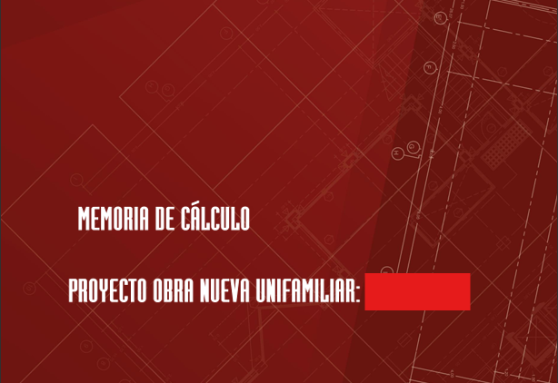
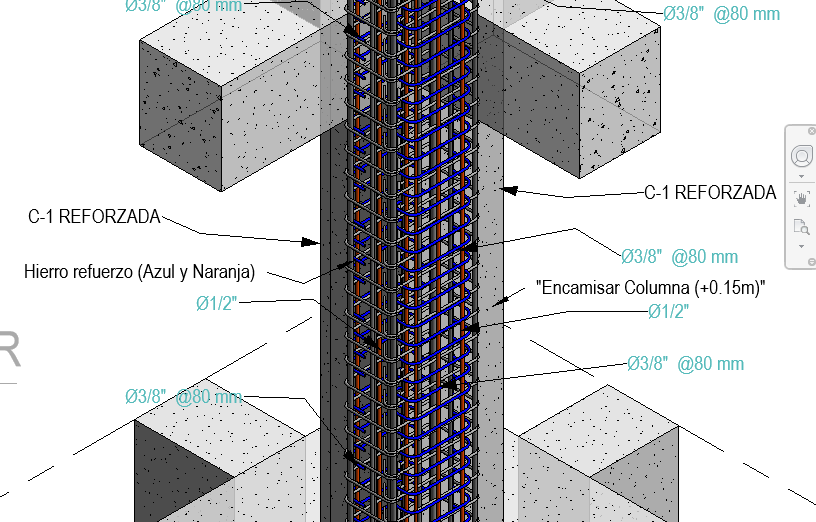
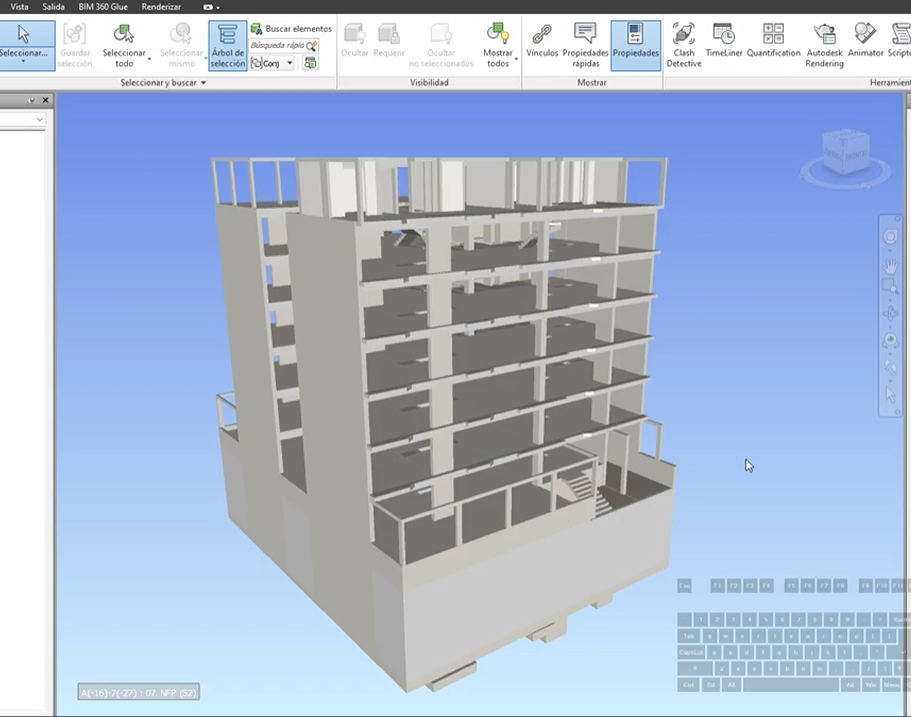
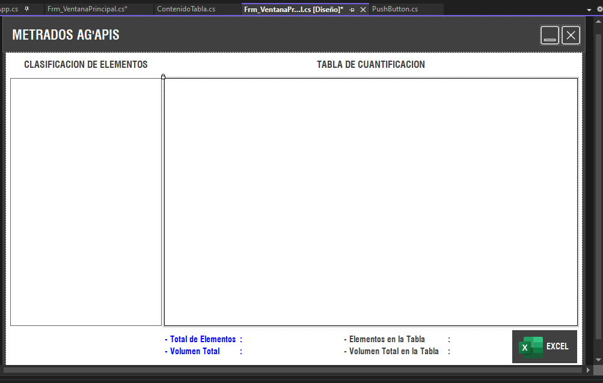

Áreas de especialización
Desarrollo soluciones estructurales seguras, verificables y constructivamente eficientes, integrando análisis estructural, criterios normativos y herramientas de automatización técnica.

01 / Diseño
Diseño estructural de edificaciones
Modelación analítica, verificación sísmica, control de derivas y diseño conforme a normativa. Desarrollo de memorias técnicas y definición de sistemas estructurales en concreto y acero.

02 / Evaluación
Evaluación e intervención estructural
Diagnóstico del comportamiento estructural, evaluación de seguridad, propuestas de refuerzo y adaptación estructural en edificaciones existentes.

03 / BIM
Ingeniería estructural + BIM
Modelos BIM estructurales, coordinación interdisciplinaria, control de interferencias y generación de documentación técnica constructiva.

04 / Automatización
Análisis especializado y automatización
Desarrollo de herramientas computacionales para optimizar cálculos, generar reportes automáticos y mejorar la eficiencia del análisis estructural.